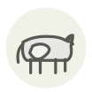

Bœuf Rouge des Prés
Rouge des Prés beef
| Nom latin | Bos taurus (Rouge des Prés) |
|---|---|
| Famille | Viandes & volailles |
| Origine | Val de Loire, Maine-et-Loire |
| Saison | Toute l’année |
| Goût | Charnu · Riche · Beurré · Terreux |
| Prix courant | 18–35 €/kg |
Ce que c’est
La race a dû abandonner son propre nom : elle s’appelait maine-anjou jusqu’en 2003, quand la viande a obtenu son appellation et que la règle européenne a interdit qu’un nom protégé soit aussi celui d’une race — les bêtes sont devenues rouge des prés, et l’AOP a gardé Maine-Anjou. Ce sont surtout des vaches de réforme finies à l’herbe des vallées ligériennes, d’où le persillé et le gras jaune.
En cuisine
Un gras jaune signale le carotène et une longue vie à l’herbe : ne le parez pas, fondez-le et cuisez la viande dedans. Une côte de vache âgée demande une chaleur plus basse et plus longue qu’un jeune taureau : elle colore vite et le cœur doit rattraper.
S’accorde avec
Os à moelle Échalote Champignon de Paris Beurre de baratte Poivre noir Carotte Thym Vinaigre de vin rouge
Même espèce
Abura-kasu Amourettes Araignée bastourma Bavette Bœuf
Une erreur ici, ou un oubli ? Dites-le nous